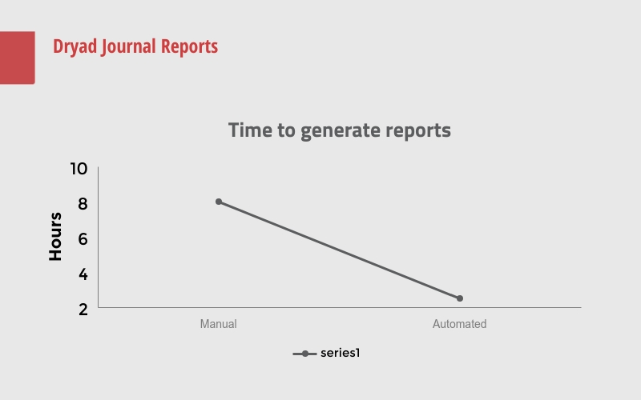

Debra Fagan
NCSU Digital Technologies Development Librarian: Technical Scenario Prompt
Purpose
Architecture
Technologies
Results
Reflections
Dryad Automated Reports
Results
The project had positive impact:
Drastic cut in the amount of time taken to generate reports
Made creating new reports easier and faster
